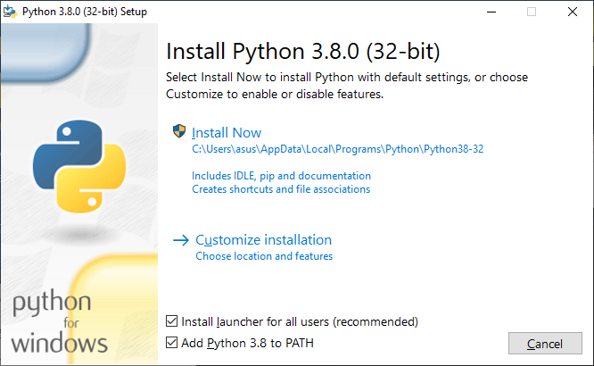
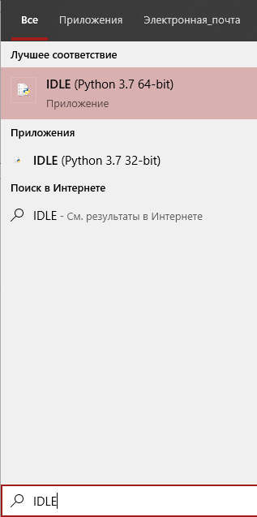
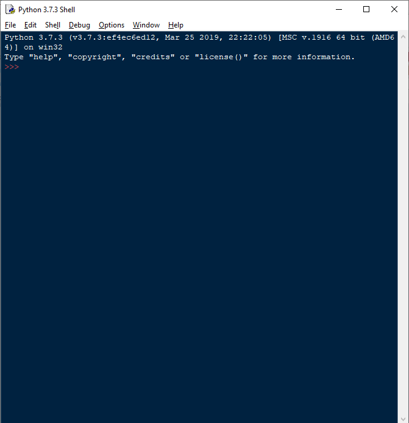
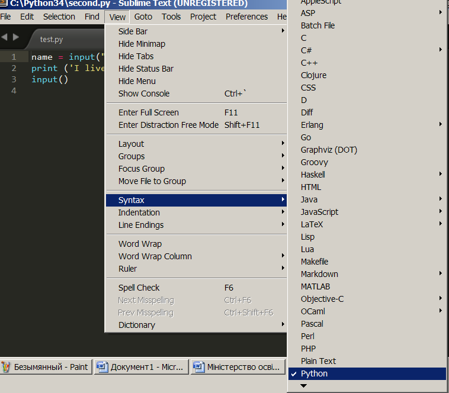
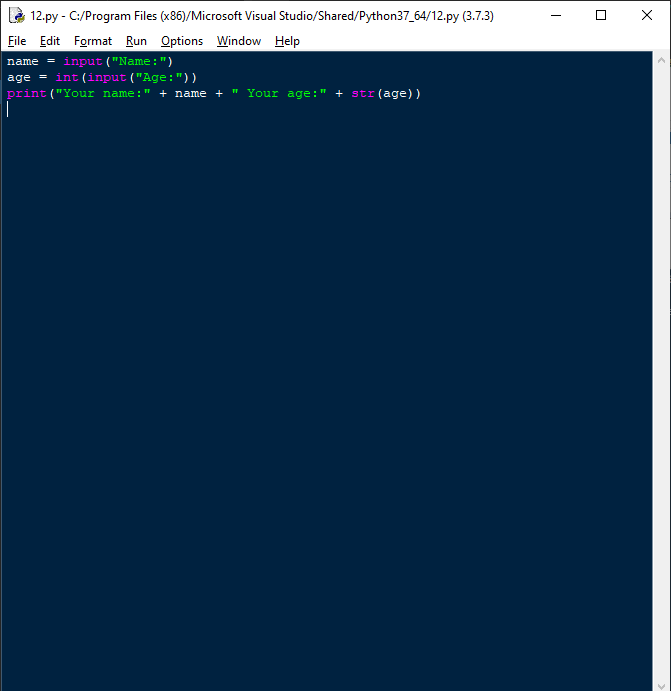
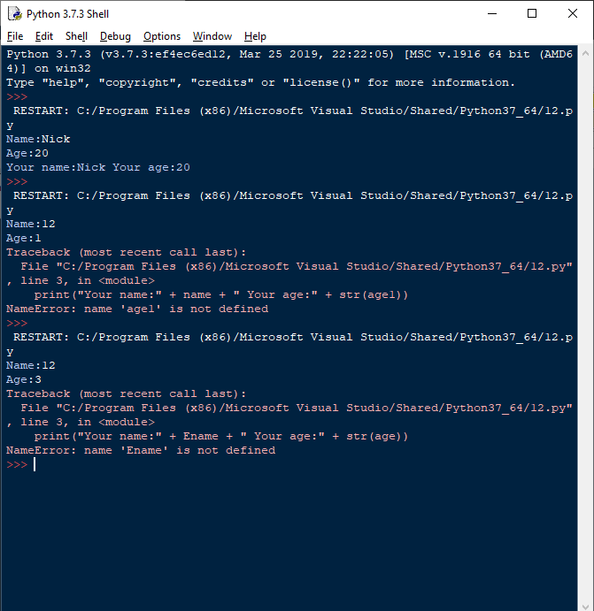

Встановлення і робота з інтерпретатором Python
Встановлення і робота з інтерпретатором Python¶
Зайти на сайт Python і завантажити свіжу версію інтерпретатора, яка співвідноситься з ОС, встановленої на комп’ютері.

Запустити інтегровану середу Python IDLE.

З’явиться вікно середовища інтерпретатора, готового до інтерактивної роботи.

Середовище IDLE забезпечує три ключових можливості:
Введення виразів і програмного коду на мові Python з отриманням результатів прямо в командній оболонці Python;
Надає редактор програмного коду з підсвічуванням синтаксису мови Python і підтримкою функції оформлення відступів
Покрокове виконання програмного коду яке полегшує пошук і усунення помилок.
Інтегроване середовище розробки особливо зручне при опробуванні простих алгоритмів, фрагментів програмного коду і регулярних виразів і може використовуватися як дуже потужний і гнучкий калькулятор.
Програмний код на мові Python можна записати за допомогою будь-якого простого текстового редактора, який здатний завантажувати і зберігати текст або в кодуванні ASCII, або UTF-8. За замовчуванням передбачається, що файли на мові Python зберігаються в кодуванні UTF-8, підмножині кодування ASCII, за допомогою якої можна представити практично будь-який символ алфавіту.
Заготовлений заздалегідь файл на мові Python можна запустити наступним чином.
Набрати файл в редакторі Блокнот і зберегти його з розширенням py. Або використати редактор текстів Sublime Text. Завантажити його можна за адресою https://www.sublimetext.com/. Він дозволяє вибрати синтаксис мови, на якому буде написана програма, що дозволить редактору видавати підказки і підсвічувати код.

Ще одна можливість створити файл, в IDLE зайти в меню File, вибрати опцію New File і виникне меню, в якому можна набибрати текст:

Для запуску на виконання натисніть Run.
Якщо є помилки, вони будуть локалізовані.

Файл або код також можна протестувати за допомогою терміналу.
Відкрийте термінал:
Windows: натисніть
Win+R, введітьcmdта натисніть OK.Ви також можете скачати емулятор терміналу cmder.Linux: натисніть
Ctrl+Alt+T.MacOS: натисніть
Cmd+Space, уведітьTerminalта натиснітьEnter. Ви також можете завантажити з AppStore емулятор терміналуiTerm.
Введіть
pythonаби запустити інтерактивну консоль, абоpython <ім'я файлу>аби запустити файл.У разі помилки, налаштуйте змінну оточення
PATH: https://geek-university.com/python/add-python-to-the-windows-path/.
Окрім терміналу та IDLE також існують спеціальні редактори коду:
Notepad++,
SumblimeText,
Visual Studio Code,
PyCharm.